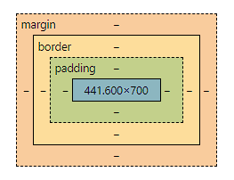

盒子模型
盒子模型主要由以下四个部分组成：
-
内容（Content）: 它是盒子模型的中心部分，包含了实际的内容，比如文本、图片等。
-
内边距（Padding）: 内边距位于内容区域的外围。
-
边框（Border）: 边框环绕在内边距的外侧。
-
外边距（Margin）: 外边距是盒子模型的最外层，可以控制元素之间的间隔。

-
盒子的宽度（Width）：盒子的宽度由内容宽度、内边距和边框宽度的总和决定。
-
盒子的高度（Height）：盒子的高度由内容高度、内边距和边框高度的总和决定。
-
width：设置盒子的宽度。
.box { width: 300px; } -
height：设置盒子的高度。
.box { height: 200px; } -
padding：设置盒子的内边距，控制内容与边框之间的空白区域。可以使用
padding-top、padding-right、padding-bottom和padding-left来分别指定上、右、下和左的内边距。.box { padding: 20px; } -
border：设置盒子的边框样式、宽度和颜色。可以使用
border-width、border-style和border-color分别指定边框的宽度、样式和颜色。也可以使用border-top、border-right、border-bottom和border-left来分别指定上、右、下和左的边框。.box { border: 1px solid #000; } -
margin：设置盒子的外边距，控制元素与其他元素之间的间隔。可以使用
margin-top、margin-right、margin-bottom和margin-left来分别指定上、右、下和左的外边距。.box { margin: 10px; } -
box-sizing：指定盒子模型的类型，可以是
content-box（标准盒子模型）或border-box（IE 盒子模型）。 盒子模型（Box Model）是 CSS 中用来描述和布局 HTML 元素的概念。它将每个 HTML 元素看作一个矩形的盒子，由内容区域、内边距、边框和外边距组成。在 CSS 中，盒子模型有两种常见的类型：
- 标准盒子模型（Content Box Model）： 标准盒子模型是 CSS 的默认盒子模型。在标准盒子模型中，一个元素的宽度和高度仅包括其内容区域（content area），不包括内边距、边框和外边距。
+---------------------------+ | content area | | | +---------------------------+在标准盒子模型中，元素的总宽度 = 左内边距 + 左边框 + 内容宽度 + 右边框 + 右内边距，元素的总高度 = 上内边距 + 上边框 + 内容高度 + 下边框 + 下内边距。
- IE 盒子模型（Border Box Model）： IE 盒子模型是早期 Internet Explorer 浏览器使用的盒子模型。在 IE 盒子模型中，一个元素的宽度和高度包括其内容区域、内边距和边框，不计算外边距。
.box { box-sizing: border-box; } -
display：指定元素的显示方式，常用的值包括
block（块级元素）、inline（内联元素）和inline-block（内联块级元素）。.box { display: inline-block; } -
float：指定元素的浮动方式，使元素脱离正常的文档流，常用于实现多列布局。
Float（浮动）：
- float 属性用于将元素从正常的文档流中浮动到其容器的左侧或右侧，以便实现元素的排列。
- 值可以是
left（左浮动）、right（右浮动）或none（默认值，不浮动）。 - 浮动的元素会脱离正常的文档流，其他元素会围绕浮动元素进行布局。
- 使用浮动通常可以实现多列布局、图文混排等效果。
.box { float: left; } -
position：指定元素的定位方式，常用的值包括
relative（相对定位）、absolute（绝对定位）和fixed（固定定位）。 https://developer.mozilla.org/en-US/docs/Web/CSS/position#try_it- position 属性用于控制元素的定位方式，指定元素在页面中的位置。
- 值可以是
static（默认值，元素在正常的文档流中）、relative（相对定位）、absolute（绝对定位）、fixed（固定定位）或sticky（粘性定位）。 - 相对定位（relative）：元素相对于其正常位置进行定位，可以使用
top、right、bottom和left属性来指定偏移量。 - 绝对定位（absolute）：元素相对于最近的已定位祖先元素进行定位，如果不存在已定位的祖先元素，则相对于文档的初始包含块进行定位。
- 固定定位（fixed）：元素相对于浏览器窗口进行定位，即元素会固定在页面的某个位置不动。
- 粘性定位（sticky）：元素在滚动到特定位置时变为固定定位，否则保持相对定位的状态
.box { position: absolute; top: 50%; left: 50%; transform: translate(-50%, -50%); } -
overflow：控制当内容超出盒子尺寸时的显示方式。常用的值包括
visible（默认，内容超出盒子会显示在盒子外部）、hidden（内容超出盒子会被隐藏）、scroll（显示滚动条，无论内容是否超出盒子）和auto（根据内容是否超出盒子自动显示滚动条）。.box { overflow: auto; }
最后修改于 2024-02-13